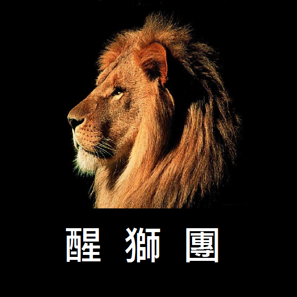

許多同學在進入大學之前，比較少接觸有關"程式"的知識
但是資訊系的基礎知識又必需在大一就培養好
才能應對大二以後的專業課程，因此課程的安排上進度比較快
對程式新手來說適應上不太容易
幾年前有熱心的學長發現了這個問題，希望能幫助學弟妹
開始利用晚上的時間額外指導學弟妹
後來系上的老師也非常支持，協助學長們成立了醒獅團。
我們會從架設基本環境開始,一步步帶大家熟悉C語言的基本概念
老師的課程進度通常比較趕
我們會安排步調比較適中的進度,讓大家更容易適應
老師上課的時候比較偏講解
我們在講解之餘，也會設計一些實作練習，讓大家更"有感"
如果對於老師的講解或作業有比較不明白的地方，想要問問題
也可以來醒獅團和學長姐們一起討論，甚至也有可能會遇到助教喔!